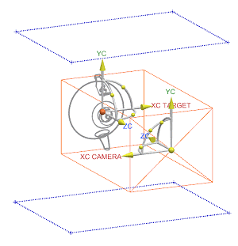
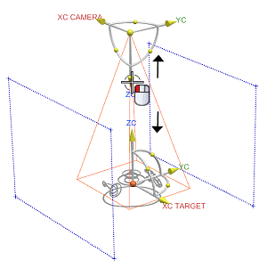

在部件导航器中，双击摄像机俯视图以激活它。
右击俯视图并选择编辑。
舞台窗口显示一个正交的布局，这是因为这个摄像机是基于正交视图创建的。

在编辑摄像机对话框，将类型设置为透视。
右击图形窗口背景并选择定向视图→正三轴测图。
来回拖动摄像机的 ZC 矢量并查看在插入窗口中的变化。

在定制缩放组的视野角度输入框中，键入50并回车。
如果模型由于透视设置被剪切，在剪切组中，点击使平面适合范围来调整剪切平面。
当得到满意的摄像机后，点击确定。
关闭部件。